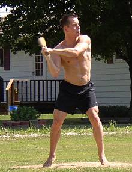
Greg Howard had a career day at the plate hitting 4 homeruns in game one. |
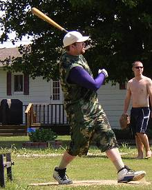
Dustin Waldrop returned with 2 big homeruns and 5 RBI. |
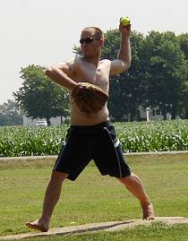
Josh Williamson picked up the win striking out 9 batters in game one. |
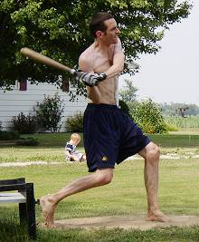
Patrick Cork went 12-for-27 with 6 homeruns and 9 RBI. |
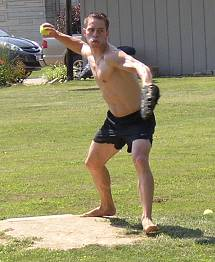
Greg Howard took the loss in the opener allowing 7 earned runs over 8 innings of work. |
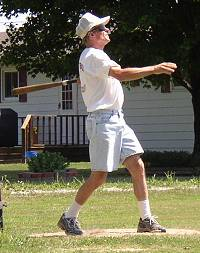
Tony Cork was 5-for-23 on the afternoon and scored 4 runs. |
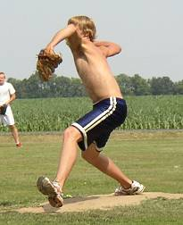
Robert Trimble dominated in the second game with a 4-hit shutout. |
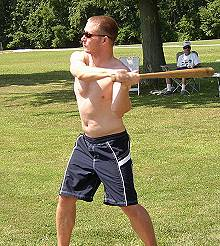
Josh Williamson set a chair baseball record with 5 triples in the first game and drove in 6 runs. |
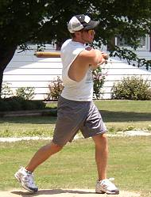
Jake Hoalt made his 2006 debut but was hitless in 12 at bats. |
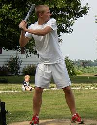
David Ulrich was 6-for-15 including a pair of triples in game two. |
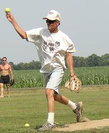
Tony Cork suffered his first loss of the season allowing 11 runs. |
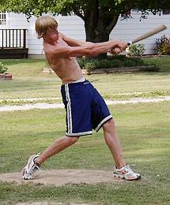
Robert Trimble went 9-for-15 with 3 homeruns in the second game including 4 RBI. |